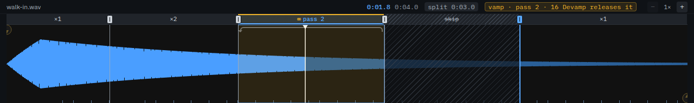

Working with sound
Everything an audio cue can do, in the order you usually need it.
The file, and what plays of it

Browse picks the file; the folder it sits in is written under the name. WAV, AIFF, FLAC, MP3, M4A and OGG all play. A file at a different sample rate to the device is resampled as it plays — pitch and tempo are unchanged.
Start time and End time, on the Time & Loops tab, are the part of the file this cue plays. Leave the end empty to play to the end of the file. The waveform in the dock shows both, and you can drag them there.
Trim silence moves the start and end to the first and last sound in the file, so a cue fires on the sound rather than on whatever the editor left in front of it. It can be the default for new cues in Settings → Audio.
Level, pan and fades
Volume and Pan are the cue's own, applied as it plays. Fade in ramps it up from silence over that many seconds when it starts, and Fade out takes it down to silence over that many seconds before its own end — the end of its region, or of its last loop — so a track that should not stop dead does not.
To change a level while a cue is already playing, use a fade cue pointed at it: a target, a level to reach, and a time to take getting there. Tick Stop when done and the fade becomes a fade-out — the usual way to take music out under dialogue.
Every fade has a shape: the cue's fade in and fade out, a fade cue, a Light cue's fade. Leave it at its default, pick a preset — equal power for a crossfade that does not dip, exponential for a slow start — or choose Custom and drag the curve's two handles until it moves the way the moment wants. What is drawn is what plays.
Normalize, on the Audio tab beside the trim, measures the file the way a broadcast meter does (EBU R128) and sets the trim so the cue plays at the show's loudness target, its true peak kept under the ceiling. Select a run of cues and choose Normalize loudness from the right-click menu to level the whole set in one go — and take it back with one undo. The target and ceiling are in Settings → Audio.
A stop cue stops a target at once, or fades it out first over a time you set. Wait for fade holds the show until that fade has finished, which matters when the next cue starts the moment this one is done.
Loops and vamps
Loop count on the Time & Loops tab repeats the section between
the start and end times. 0 plays it once; a number plays it that many
extra times; -1 loops for ever, which is a vamp.
A vamp holds until you let it go. Make this a vamp sets it up, and a devamp cue aimed at that cue releases it: the loop finishes the lap it is on and plays out to the end of the file. That is the underscore that holds for a scene change of unknown length and then resolves properly.
For music with more than one place to hold, cut the cue into slices on its waveform.
Slices, on the waveform

A slice is a piece of the cue's music between two markers, and it plays a number of times, not at all, or until a devamp moves it on. Every marker is a line on the waveform with a grip above it, and every slice says its count in the strip along the top: ×2, an amber ∞ over a tinted vamp, and skip struck through over a dimmed, hatched bar. The cue plays the intro once, vamps the groove until the devamp, plays the bridge twice and holds on the next vamp — each change landing on its sample.
- Add a marker — click the waveform to put the cursor on the note and press M, double-click, or right-click and choose Add marker. While the cue plays, M marks where the music is.
- Move one — drag its grip, or its line. It lands on a note near the pointer and then on the zero crossing beside it, so the cut does not click; hold Shift for a free hand. Markers stop against each other rather than cross. With the grip selected, ← → nudge it 10 ms, 100 ms with Shift.
- Take one out — Delete on a selected marker, or Delete marker from the right-click menu on it. The slices either side join and keep the earlier one's count; the waveform's header says which.
- Set a count — click a slice and choose ×1 to ×4, type a larger count, ∞ vamp or skip. On a focused slice ↑ ↓ step the count, a digit sets it (0 skips) and V makes it a vamp; the scroll wheel over it steps it too.
Each of those is one edit, and one Ctrl/⌘ + Z takes it back — a whole drag included. Tab walks the strip from left to right, a slice and then the marker that ends it. Zoom in to place a marker on a note; zoomed out, a slice too narrow for its label still shows its tint and its line.
While the cue plays, the slice the music is in is lit and counts its passes — 2/4 on a slice that plays four times, pass 3 on a vamp — and a bracket over the waveform shows the playhead jumping back at each pass and over each skipped slice. A vamp that is holding says so in the header, with the devamp cue that will let it go. A devamp set to Stop at the end of the slice ends the cue there instead.
A slice set to play 0 times is skipped — a cut bar, or the bar a recording repeats after a vamp — and the music goes from the slice before straight into the slice after; a last slice of 0 ends the cue where it begins. A cue with slices ignores its loop count. The inspector's Slices tab counts the slices, vamps and skips, lists the markers — pick one to select it on the waveform — and Show on waveform opens the waveform when the dock is showing something else.
None of these jumps leaves a gap — a loop going round, a skipped slice, a devamp, a Control cue's load to a later slice — whether the file is a long one played from disk or a short one held in memory. Where the music either side of a jump does not meet, the jump is made over a 3 ms crossfade, so a slice cut away from a zero crossing does not click; where it does meet, it is joined sample for sample. Each pass and each slice still starts on its own sample, so a devamp lands where it always did.
Where the channels go
Output routing on the Audio tab has three modes:
- Automatic — the file's channels play in order on the device. Stereo file, stereo out.
- Matrix — you say which file channel feeds which device channel, and at what gain. One channel can feed several outputs, and several can meet on one. This is how a mono effect reaches four zones, or a stereo file lands on outputs 7 and 8.
- Silent — the cue runs and takes its time, and sends nothing. Useful as a placeholder that keeps a sequence's timing honest.
The device itself, its sample rate, buffer and channel count are in Settings → Audio, with what the engine is actually doing underneath them.
Output patches, also in Settings → Audio, name sets of outputs — Mains, Foldback, Delays — so a cue says where it goes by name: choose the patch under Output patch, and a matrix then addresses the patch's own channels. When the rig changes, change the patch, not every cue. The Mixer button by the master opens a strip for each patch and each output, with a fader, a mute and a meter, and the master beside them.
A patch can play on another interface: choose it as the patch's device — the band's in-ear rack beside the house system, a second USB interface for the delays. The engine plays every device the patches name at once, opened when the show loads so the first cue on one starts at once, and holds each to the show's own device's clock, so a cue sent to two of them stays in phase all night rather than drifting apart. The master, PAUSE, PANIC, fades and live inputs reach them all. Output devices, under the patches, says how each one is: its rate, its clock against the show's device and how far behind it it sounds. If one goes — unplugged, taken by another program — its cues stop, the rest of the show plays on, and its patches play on the show's device until Reconnect brings it back. A show opened on a machine that has not got one of its devices says which patches fell back, and where they are playing instead.
Audition plays a cue, a selection or a whole file on the show's audition output — headphones at the desk — without firing anything: the list does not move. Choose the audition output in Settings → Audio first.
A Live Input cue plays a microphone or a line input through the engine with the same level, pan, routing, patches and fades as a file. Pick the input and its channels; Open input shows the level and the time through the engine. A separate interface works: the engine follows its clock and keeps the buffer steady.
On Windows, Audio system above the device picks how the sound leaves the machine: Windows audio, the platform's own mixer, or ASIO, which drives an interface through its own driver instead. Everywhere else the row is the platform's own stack and nothing more. ASIO is the one for a rig whose interface has its own driver — a professional one, or a virtual one like Dante Virtual Soundcard — and for setting the buffer on the interface rather than letting Windows mix. While the show is open that driver is held by Cuerunner alone, and its own control panel owns the sample rate, the buffer and the channel count; Cuerunner reports what it was given, and the latency beside it is the driver's own, marked (driver). One driver at a time, and the whole interface's outputs, up to 32 channels. A machine with no ASIO driver says so when you choose it, and a driver that asks for a reset reopens the device — the show stops for that instant and the Audio tab says why.
Next
Running the show, or the field-by-field reference for audio, fade, stop and devamp cues.